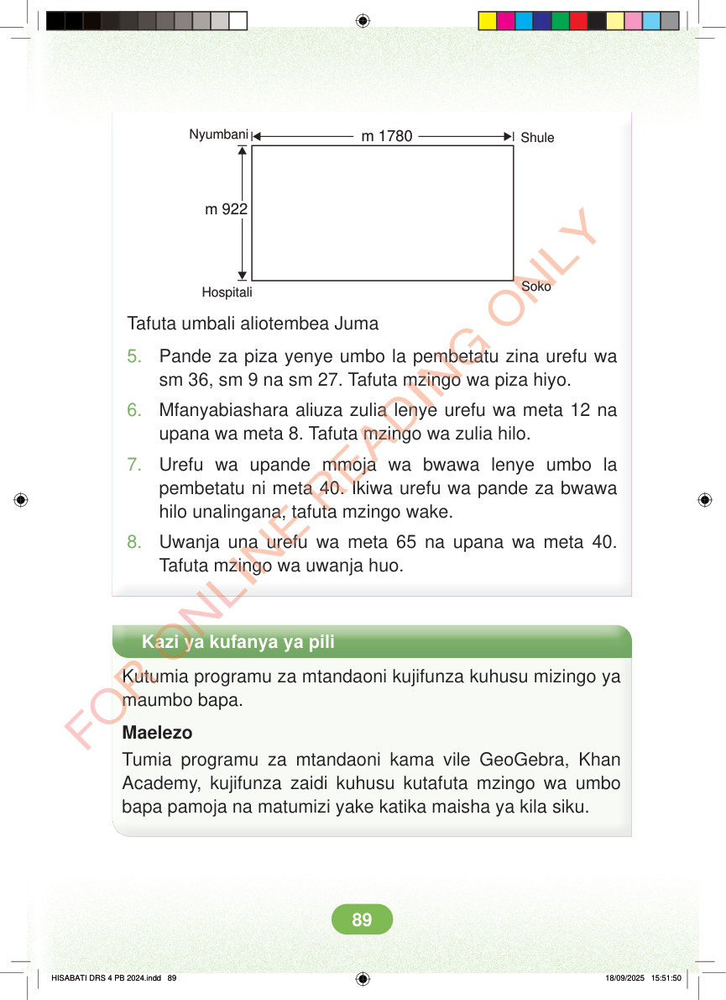

<!DOCTYPE html>
<html lang="sw-TZ"><head><meta charset="utf-8"><meta name="viewport" content="width=device-width,initial-scale=1">
<title>Hisabati: Kitabu cha Mwanafunzi Darasa la Nne</title>
<meta name="title-id" content="pg095_sec001"><meta name="page-section-id" content="99">
<link href="./content/tailwind_output.css" rel="stylesheet"><link href="./assets/libs/fontawesome/css/all.min.css" rel="stylesheet"><link href="./assets/fonts.css" rel="stylesheet">
<style>body{margin:0;background:#eef1ed}main{width:100%;display:flex;justify-content:center;padding:1rem 1rem 5rem;box-sizing:border-box}#content{width:100%;display:flex;justify-content:center}.pdf-page{position:relative;width:min(calc(100vw - 2rem),56rem);aspect-ratio:557.906005859375/767.6690063476562;background:white;box-shadow:0 4px 24px #0002;overflow:hidden}.pdf-page img{position:absolute;inset:0;width:100%;height:100%;object-fit:fill}</style>
</head><body><main><h1 class="sr-only" id="page-heading">Ukurasa wa 95</h1><div id="content" class="opacity-0"><section role="article" data-section-type="pdf_accessible_page" data-section-id="pg095_sec001" aria-labelledby="page-heading" class="pdf-page"><p class="sr-only" data-id="pg095_gp001_tx001">m 1780 Nyumbani Shule m 922 Hospitali Soko Tafuta umbali aliotembea Juma 5. Pande za piza yenye umbo la pembetatu zina urefu wa sm 36, sm 9 na sm 27. Tafuta mzingo wa piza hiyo. 6. Mfanyabiashara aliuza zulia lenye urefu wa meta 12 na upana wa meta 8. Tafuta mzingo wa zulia hilo. 7. Urefu wa upande mmoja wa bwawa lenye umbo la pembetatu ni meta 40. Ikiwa urefu wa pande za bwawa hilo unalingana, tafuta mzingo wake. 8. Uwanja una urefu wa meta 65 na upana wa meta 40. Tafuta mzingo wa uwanja huo. Kazi ya kufanya ya pili Kutumia programu za mtandaoni kujifunza kuhusu mizingo ya maumbo bapa. Maelezo Tumia programu za mtandaoni kama vile GeoGebra, Khan Academy, kujifunza zaidi kuhusu kutafuta mzingo wa umbo bapa pamoja na matumizi yake katika maisha ya kila siku. HISABATI DRS 4 PB 2024.indd 89 HISABATI DRS 4 PB 2024.indd 89 18/09/2025 15:51:50 18/09/2025 15:51:50</p></section></div></main><div class="relative z-50" id="interface-container"></div><div class="relative z-50" id="nav-container"></div><script src="./assets/offline-preloader.js?v=audiofix-20260824-1"></script><script src="./assets/scorm.js"></script><script src="./assets/base.bundle.local.js?v=audiofix-20260824-1"></script></body></html>